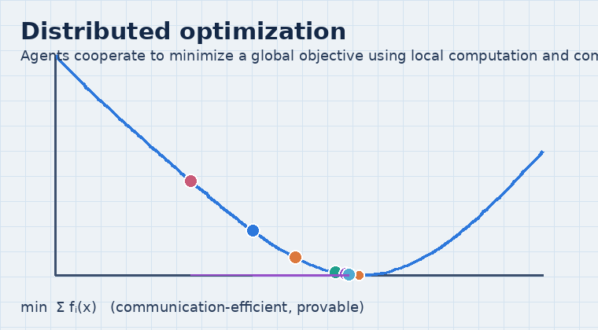
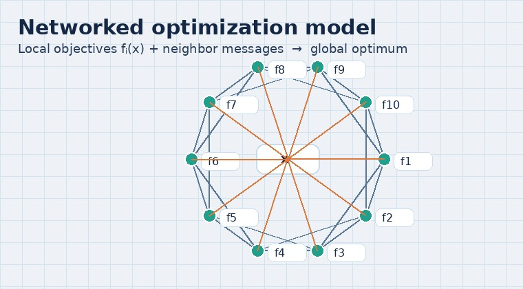

Distributed optimization
Many networked systems need to optimize a global objective (e.g., resource allocation, economic dispatch) without a central controller. Distributed optimization designs algorithms where each agent uses local computation and neighbor communication to jointly minimize a global cost with provable guarantees.

Core questions
- How to solve min ∑ fi(x) with limited communication?
- How to handle constraints, delays, packet drops, and directed/unbalanced networks?
- How to improve convergence speed with communication-efficient protocols?
Illustrations

Cooperative descent
Agents combine local gradients with neighbor information to approach a shared optimizer.

Networked model
Local objectives and messages over a graph drive the global decision variable toward optimality.
Typical applications
- Economic dispatch and resource allocation (energy, transportation, manufacturing).
- Distributed estimation, sensor fusion, and multi-agent decision-making.
- Optimization-driven control and learning in large-scale networks.
Related reading
- Sign projected gradient flow: A continuous-time approach to convex optimization with linear equality constraints (Automatica, 2020).
- A scaling-function approach for distributed constrained optimization in unbalanced multi-agent networks (IEEE TAC, 2022).
- Distributed economic dispatch via a predictive scheme: heterogeneous delays and privacy preservation (Automatica, 2021).
- Distributed optimization and statistical learning via the alternating direction method of multipliers (FnT ML, 2011).
- Distributed subgradient methods for multi-agent optimization (IEEE TAC, 2009).
Interested in joining? See Openings.